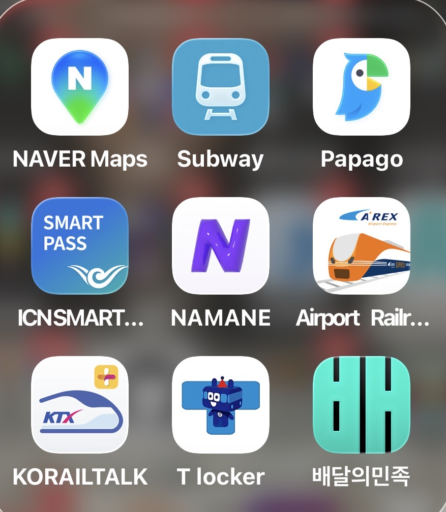

第一次去韓國，光是 App 就需要裝一堆——有些是韓國獨有的服務，有些是台灣熟悉的工具在韓國根本用不上。 這份清單整理了我實際用過、確實有幫助的 9 款 App，按類型分組，出發前半小時裝完就能出發。

行前在手機裝好這幾個，到了韓國基本上什麼都搞定
// 必裝（每天都會用到）
NAVER Maps 導航
韓國導航首選。Google Maps 在韓國的路線規劃常有誤差，NAVER Maps 更新即時、步行路線更準，徒步、大眾運輸都靠它。
💡 建議設定語言為中文或英文，介面更好讀
Papago 翻譯
NAVER 出品的翻譯 App，韓文翻譯準確度遠超 Google 翻譯。相機即時翻譯菜單、拍照翻牌子都很好用，韓國餐廳點菜必備。
💡 拍菜單翻譯是最常用功能，不認識的字直接對著它拍
Subway 地鐵
首爾地鐵路線規劃專用 App。查轉乘站、幾號出口、搭幾號車廂都很清楚，首爾地鐵線路複雜，這個 App 救了很多次。
💡 離線也能查路線，不用擔心沒網路
배달의민족 外送
韓國最大外送平台，俗稱「Baemin（배민）」。飯店懶得出門的晚上，炸雞加啤酒直接送上門，是最韓國的體驗之一。
💡 需要韓國手機號驗證，建議用飯店 WiFi 試看看
// 交通相關
Airport Railr... (A'REX) 機場快線
仁川機場快線直通列車購票 App。在台灣出發前就買好，到機場直接掃 QR Code 入站，省去現場排隊換票的時間。
💡 直通列車 43 分鐘到首爾站，比普通車省約 20 分鐘
KORAILTALK KTX
韓國高速鐵路 KTX 官方訂票 App。如果行程有跨城市（例如首爾→釜山），提前在 App 訂票比現場排隊購票省很多時間。
💡 外國旅客可用信用卡支付，介面有英文版
T locker 寄物
首爾地鐵站內行李寄放服務。換飯店的空檔，或早上 Check out 後還想繼續逛，可以把行李寄放在地鐵站的儲物櫃，按時計費。
💡 主要大站都有，龍山、弘大、明洞站都找得到
// 入境 & 其他
ICNSMART PASS 快速通關
仁川機場入境快速通關（SES 系統）登記 App。事先在 App 登記護照與指紋資訊，入境時走快速通關通道，比一般排隊快很多。
💡 需要在出發前 72 小時內完成登記，記得提前辦
NAMANE 名片
韓國人常用的數位名片 App。交換聯絡方式時，韓國當地人可能會用這個 App 分享，裝了比較不會一臉茫然，非必裝但有備無患。
💡 類似台灣 LINE 名片功能，不常用但偶爾會碰到
行前 Checklist
建議在出發前 1-2 天把這些 App 全部裝好並登入：
- ✅ NAVER Maps — 下載離線地圖（首爾地區）
- ✅ Papago — 測試相機翻譯功能
- ✅ Subway — 查一次飯店到第一個景點的路線
- ✅ AREX App — 購買機場快線票（出發日當天或前幾天）
- ✅ ICNSMART PASS — 提前 72 小時內登記快速通關
- ⬜ KORAILTALK — 若有跨城市行程才需要
- ⬜ T locker — 換飯店或早退時才需要
- ⬜ 배달의민족 — 住飯店的夜晚可以試看看